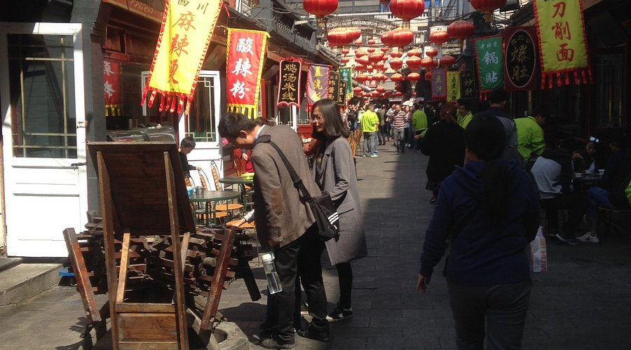

🍵 Street Food Heat 街头食气
Smoke, spice, laughter — the night market blooms like fire. Vendors call in rhythmic bursts as oil sizzles beneath their hands. Skewers glisten; sesame, chili, cumin fill the air. Here, warmth is not just flavor — it’s belonging.